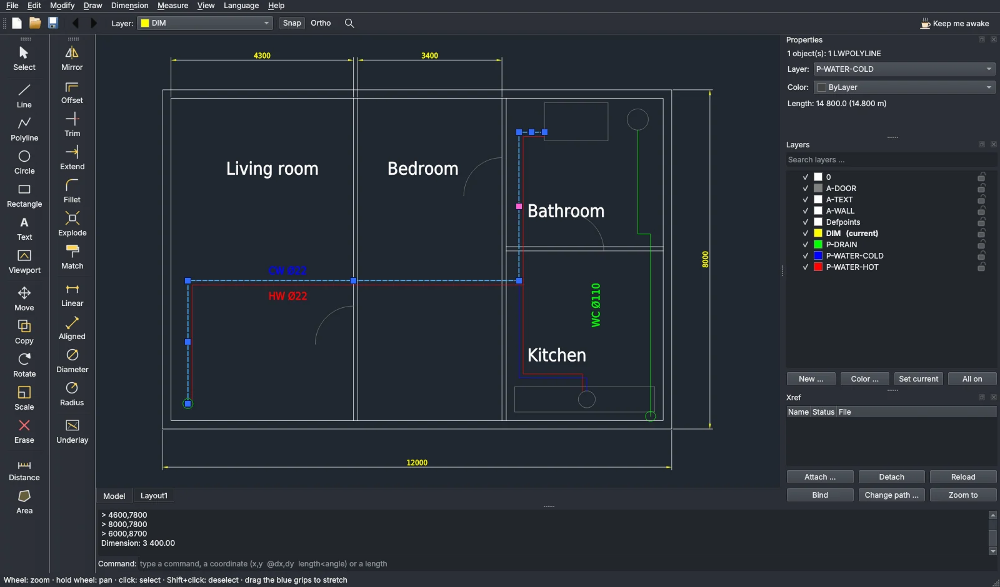
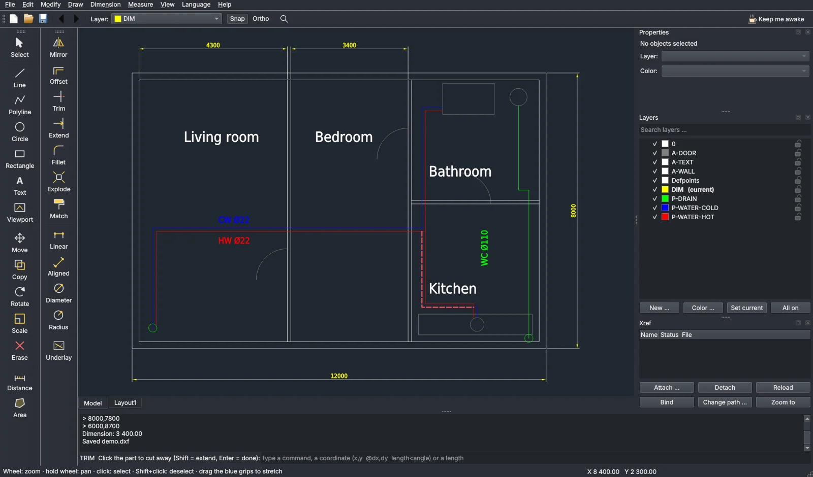
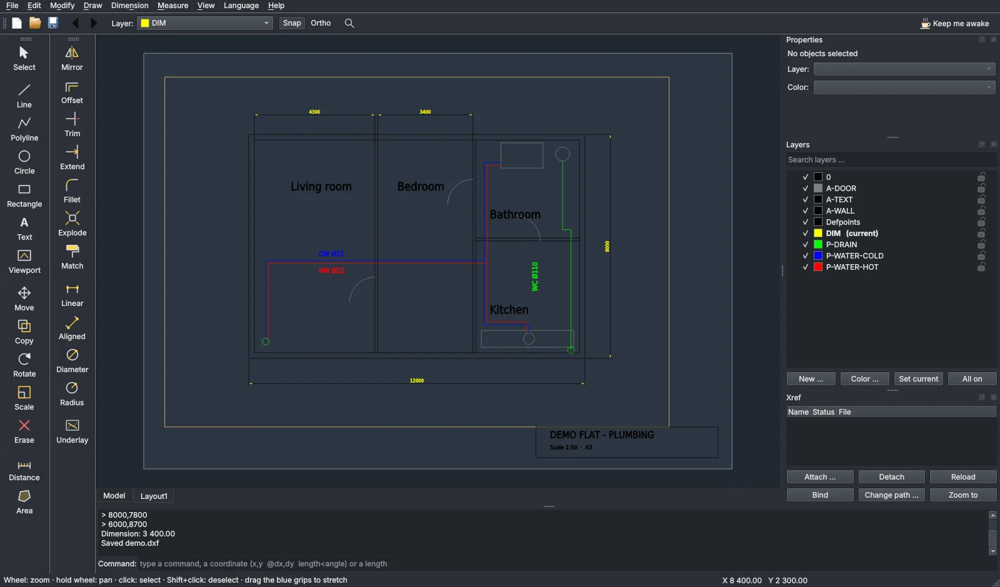
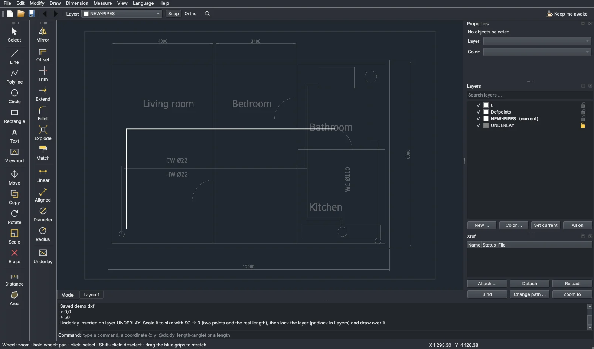

Edit DWG drawings for free.
DraftEasy opens, edits and saves AutoCAD DWG and DXF files on Windows. No subscription, no trial period, no watermark.
- DWG and DXF
- AutoCAD commands
- Russian · English
- No account, no tracking

Type it the way you type it in AutoCAD
The command line takes the usual aliases, coordinates (x,y · @dx,dy · length<angle) and Enter to repeat. Snap, ortho (F8) and Shift for straight lines work as you expect.
What it does
Made for the quick fix: a title block, a pipe moved, a dimension added, a sheet printed to PDF. When you need the full AutoCAD, you still have it.
Real DWG files
Opens and saves DWG in the version it came in, through the free ODA File Converter. The installer sets it up for you.
Grips and snaps
Blue grips to stretch lines, polylines, arcs and viewports. Object snaps as in AutoCAD: endpoint, midpoint, centre, intersection, perpendicular, tangent and more.
Layers and xrefs
Turn layers on and off, lock them, change colours. Attach, reload and bind external references.
Model and sheets
Layout tabs with A0–A4 sheets, viewports at a set scale, and export to PDF ready for printing.
Draw over a PDF
Drop a PDF or a scan onto the window, scale it to size, lock it and trace over it.
Small and quick
Starts in seconds, needs no licence server and no internet connection once installed.
See it working
Real screenshots of DraftEasy on a demo drawing.



What's new
What each version added, and what was asked for but could not be done yet.
Missing a command, or something does not work? Tell me. The best wishes go into the next version.
Suggest an improvementQuestions
Is it really free?
Yes, for private and commercial work. There is no paid version. If it saves you time, you can fuel the next version.
Do I need AutoCAD?
No. DraftEasy works on its own. For DWG files it uses ODA File Converter, a free program from the Open Design Alliance; the installer offers to install it. ODA File Converter has its own licence terms, set by Open Design Alliance; check them if you use DWG files at work. DXF files need no converter.
Will my drawing still open in AutoCAD?
Yes. DraftEasy saves standard DWG and DXF in the version the file had, and keeps a .bak copy when it saves over a file. Keep backups of important drawings, as with any program.
What can it not do?
It is a 2D editor: no 3D, no dynamic blocks or sheet sets. Hatching works inside closed polylines, rectangles and circles. See below what is new and what is not done yet.
Does it send anything over the internet?
No. There is no account, no tracking and no automatic updates. The only internet use is installing ODA File Converter, and only if you choose it.
Windows warns me when I install it. Is it safe?
Windows SmartScreen warns about new programs that are not signed with a paid code-signing certificate. DraftEasy is not signed yet. Download it only from this site (the file itself comes from GitHub), then click More info → Run anyway.
Fuel the next version
DraftEasy is free and will stay free. Support goes into new commands and fixes for the next version.